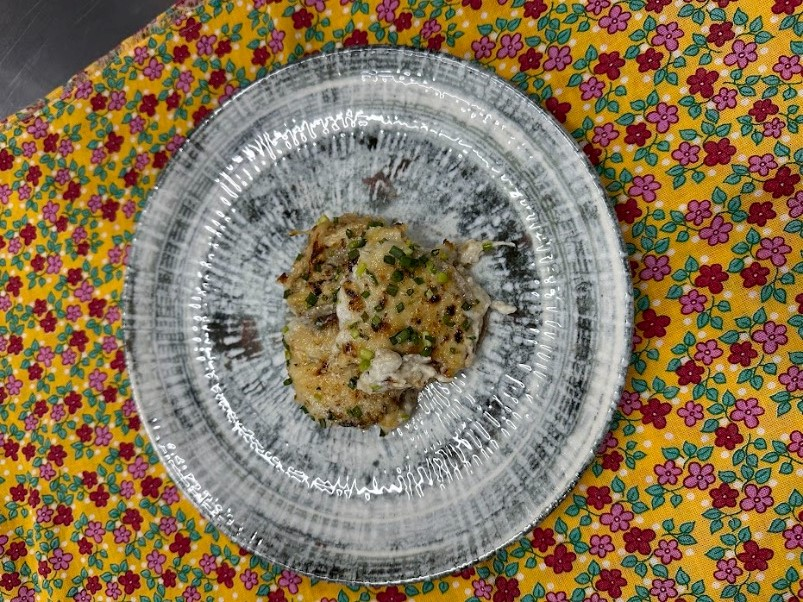

.....
Gratinado de Nabo
Como fazer o seu Gratinado de Nabo
O Gratinado de Nabo é uma deliciosa receita que combina a simplicidade dos nabos com a riqueza do molho bechamel e a cremosidade do queijo mozzarella. Esta iguaria é uma maneira saborosa de apreciar os nabos de boa qualidade, transformando-os em um prato reconfortante e cheio de sabor.
Ingredientes
O Gratinado de Nabo é uma opção versátil que pode ser apreciada em diversas ocasiões. Seja como acompanhamento em um jantar especial ou como prato principal em uma refeição reconfortante, este gratinado é uma escolha que certamente agradará a todos.
Benefícios
O rabanete é uma fonte nutritiva que oferece uma variedade de vitaminas e minerais essenciais, como vitamina C, potássio e fibras. Sua notável presença de fibras promove a saúde digestiva, enquanto o potássio pode desempenhar um papel crucial na regulação da pressão arterial e na saúde cardiovascular. Além disso, seus antioxidantes, incluindo a vitamina C, fortalecem o sistema imunológico, ajudando o corpo a combater infecções. É um ótimo aliado na hidratação, pelo seu alto teor de água, e contribui para uma pele saudável e para a saúde óssea.
Modo de Preparo
-
Preparação dos Nabos:
Descasque os nabos, lave-os e corte em rodelas bem finas. Disponha as rodelas em camadas em um recipiente próprio para forno.
Passo 1
-
Preparo do Molho Bechamel:
Em um tacho, derreta a manteiga em fogo médio. Adicione a farinha e mexa até que a mistura fique dourada. Despeje o leite morno gradualmente, mexendo constantemente. Tempere com sal, pimenta e noz moscada a gosto. Continue mexendo até que o molho bechamel esteja espesso.
Passo 2
-
Montagem do Gratinado:
Despeje o molho bechamel sobre as camadas de nabos no recipiente. Distribua o queijo mozzarella, cortado em fatias, sobre o molho bechamel.
Passo 3
-
Assar:
Leve ao forno preaquecido a 200ºC. Asse até que o gratinado esteja dourado e borbulhante, conforme seu gosto pessoal.
Passo 4
-
Servir e Apreciar:
Retire do forno e sirva o Gratinado de Nabo quente. Desfrute deste prato incrivelmente saboroso e desfrute de uma explosão de sabores e texturas.
Passo 5
Passo a passo
Passo 1
- Descasque os nabos, lave-os e corte em rodelas bem finas.
- Disponha as rodelas em camadas em um recipiente próprio para forno.
Passo 2
- Em um tacho, derreta a manteiga em fogo médio.
- Adicione a farinha e mexa até que a mistura fique dourada.
- Despeje o leite morno gradualmente, mexendo constantemente.
- Tempere com sal, pimenta e noz moscada a gosto.
- Continue mexendo até que o molho bechamel esteja espesso.
Passo 3
- Despeje o molho bechamel sobre as camadas de nabos no recipiente.
- Distribua o queijo mozzarella, cortado em fatias, sobre o molho bechamel.
Passo 4
- Leve ao forno preaquecido a 200ºC.
- Asse até que o gratinado esteja dourado e borbulhante, conforme seu gosto pessoal.
Passo 5
- Retire do forno e sirva o Gratinado de Nabo quente.
- Desfrute deste prato incrivelmente saboroso e desfrute de uma explosão de sabores e texturas.